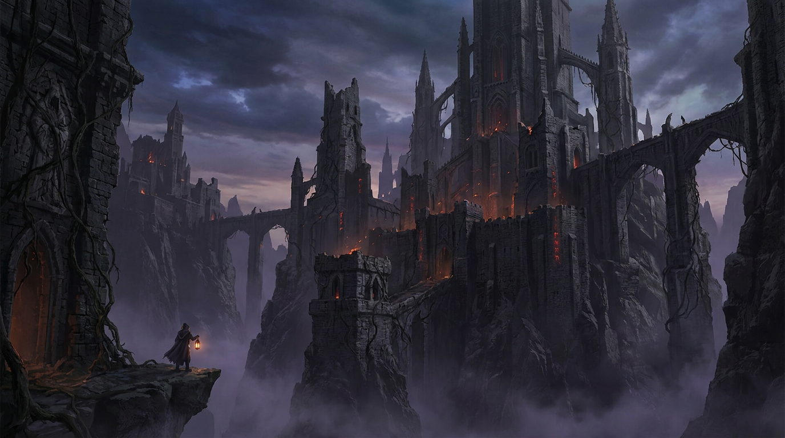

Coliseo de Ceniza
La arena donde la sangre vertida alimenta los crisoles de la ciudad y los combatientes se disputan fragmentos de alma.
Ver detallesfragor originario de las almas - la guerra solo eterna.
Erigida sobre riscos, Nefatlantis se ve no más que como una metrópolis de piedra negra y agujas góticas. Nuestra ciudadela subsiste y prospera gracias a una la guerra eterna, la extracción de cristales del alma y el comercio de reliquias arcanas.
Guerreros de otros reinos, hechiceros desterrados, mercenarios curtidos y peregrinos de la llama confluyen en sus plazas para forjar pactos, batirse en duelo o consagrar sus vidas al Consejo de Ceniza.

Para aquellos exploradores que ingresan por primera vez por las Puertas del Juramento, la urbe ofrece puntos clave de trascendencia histórica:
La arena donde la sangre vertida alimenta los crisoles de la ciudad y los combatientes se disputan fragmentos de alma.
Ver detallesGalerías subterráneas donde los mineros extraen cristales arcanos bajo la vigilancia de los centinelas.
Ver detallesDescubre los detalles completos, ubicaciones y guías de ingreso en la sección de Lugares.
Para garantizar el orden cívico y la convivencia de las diversas facciones, todo forastero debe cumplir las siguientes directivas antes de cruzar el segundo anillo: